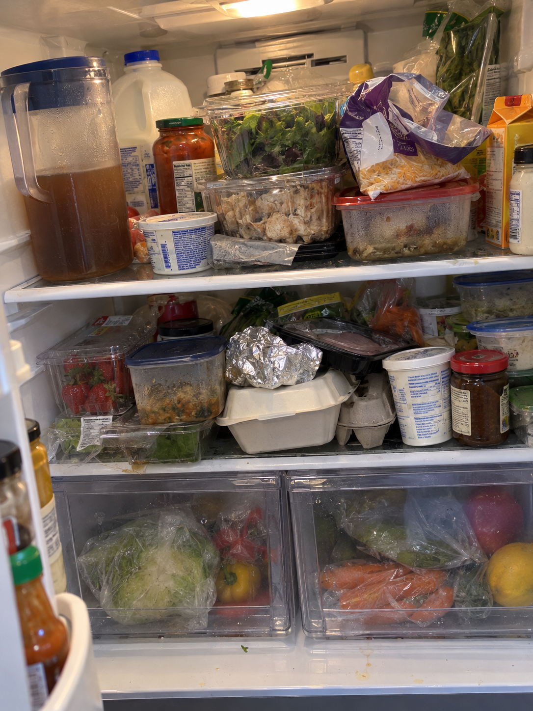

inventory01
Overstuffed family fridge
Crowded shelves, overlapping packages, stacked leftovers, turned labels, and produce behind cloudy drawers.
Expected behavior
{
"observed_candidates": [
{
"label": "pitcher of brown liquid",
"contents": null,
"exact_remaining_volume": null
},
{
"label": "dairy-style jug",
"possible_identity": "milk",
"identity_confirmed": false,
"remaining_volume": null
},
{
"label": "leafy greens in packaging",
"species": null,
"mass": null
},
{
"label": "strawberries in a clamshell",
"exact_count": null,
"mass": null
},
{
"label": "bag of shredded pale/orange food",
"possible_identity": "shredded cheese",
"identity_confirmed": false
},
{
"label": "closed egg carton partly covered by other containers",
"egg_count": null
},
{
"label": "multiple lidded and wrapped food containers",
"exact_contents": null
},
{
"label": "flat package with pink slices",
"possible_identity": "deli meat",
"identity_confirmed": false
},
{
"label": "produce behind drawer fronts",
"possible_identities": [
"carrots",
"bell peppers",
"leafy head vegetable"
],
"exact_counts": null
}
],
"inventory_coverage": "partial despite a broad view",
"completeness_claim_allowed": false,
"expiry_dates": null,
"exact_household_counts": null,
"suggested_followup": "Ask for a closer photo of a specific obscured shelf or label when it would resolve a needed item or quantity."
}Should avoid- Treat the broad view as a complete inventory or remove items that cannot be seen.
- Count each visible fragment as a separate package when the fragments may belong to one obscured container.
- Infer exact ingredient amounts, remaining milk volume, or the number of eggs inside the carton.
- Treat generic packaging, nutrition panels, or container shape as proof of a specific product.
- Invent dates, freshness, spoilage, or safety conclusions from an untidy fridge.
- Treat possible receipt matches as new purchases or silently replace recorded quantities.
Download PNG ↗1086 × 1448